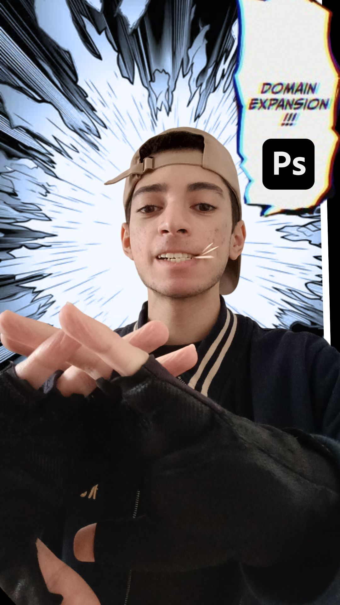
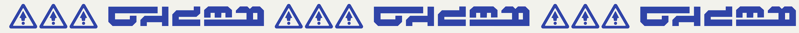

Compétences principales :
Monteur d'images :
Photoshop,
Illustrator,
Canva.
Permet de se téléporter vers
le lieu créé par le monteur à condition
qu'il ait déjà visité ce lieu.
120p de dégât initial.

Compétences secondaires :
Il possede les sortilèges
"Plume" et
"Changement de dimension".
130p de dégât initial.
Sur moi :
On peut être n'importe qui et n'importe où grâce aux montages.
C'est une des choses que j'aime faire en raison du potentiel que cela offre.
J'ai développé ce goût grâce aux miniatures et vidéos de mes influenceurs favoris
sur YouTube, et aussi grâce à la créativité des personnes dans la réalisation
des posters pour la boîte d'un jeu vidéo, pour un film, séries, etc.

"Je suis prêt à vous emmener
dans un autre univers !"